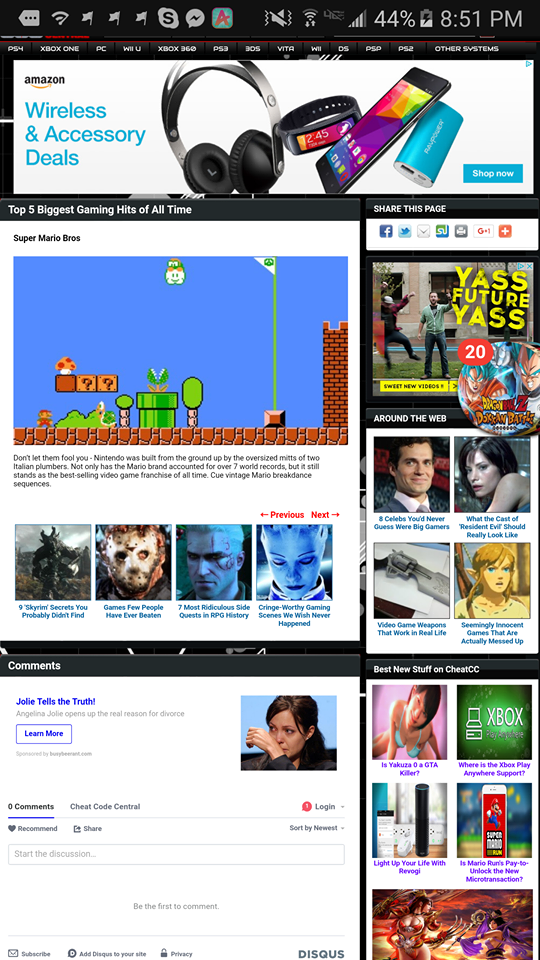

Visitor Analysis and Persona
GameFAQS
URL: GameFAQS
Visitor Analysis
The target ausience of this website are those who are looking up information about video games. Majority of those individuas are between the ages of 15 to mid to late 20's. They are most likely doing a quick look up while in the middle of a game so a phone as a device to browse this website on would not be far fetched. Some of those who look up informatin after or before playing the game can also be a target of their audience of users, but based on the gamer mentality, they want to figure stuff out as soon as they possibly can. In order for this site to fufill these demands they created their search bar as the first thing that you see. So if a user wants to find information about a specific game, they can easily look it up. Each page is simple to read and hard to get lost in. If you aren't sure what game it is you are looking for you can look up various games based on the console it is on. The beauty of the site also comes from the repition of its signature contrast colors and the ability of having very readable text in the website.
Persona
This is Jimmy. He is an 18 year old high school student. He enjoys casual gaming on various games and consoles. He is also blessed to have free time on his hands because he still lives in his parents house as he goes to high school as a senior. He doesn't always play games but when he does, he doesn't like to spend too much time playing through parts that require too much thought. He mainly enjoys the art and story of his games. He uses his phone constantly to find information in helping him get through tough challenges or tough enemies.Bad site contrast
CheatCC
Looking at this specific website on his phone, Jimmy is confounded. He isn't sure what he is looking at. Will this site help him? Will it tell him what he needs to know to finish a particular enemy? Will it tell him anything at all aside from random frontpage articles that Jimmy didn't want to look at in the first place. The search bar is hidden, the categories are impossible to read without messing with the website on his phone. The pictures that attract his gaze don't actually tell Jimmy what he is looking at. He sees so many different types of typography and color that it just confuses his sight.
